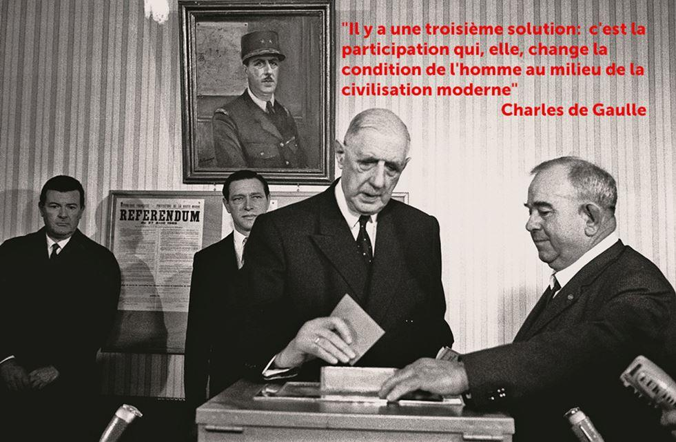

Alors que tant d’hommes politique font référence au général de Gaulle, on est en droit de se poser la question : que reste-t-il de l’héritage gaulliste ? La question est d’autant plus pertinente que Charles de Gaulle correspond comme un maitre étalon à la citation de James Freeman Clarke : « Un politicien pense à la prochaine élection. L'homme d'État, à la prochaine génération. »
L’héritage politique
De ce point de vue force est de constater qu’il n’y a depuis longtemps plus de vrai gaulliste dans les sphères du pouvoir. La mort de Georges Pompidou a pris les stratèges du gaullisme au dépourvu et la guerre intestine des candidatures « Chaban-Chirac » a mis fin au gaullisme vertueux. L’élection de Valery Giscard d’Estaing a marqué l’éloignement de la doctrine gaulliste. Celle de Mitterrand a été le dernier coup de poignard dans le dos. Le « grand » Jacques Chirac, rad-soc corrézien bien plus que gaulliste a eu des accents gaulliens mais la vraie gaulliste dans sa famille est son épouse, née Chaudron de Courcelles et nièce d’un aide de camp historique du général : celui qui l’a accompagné en exil à Londres.
Sarkozy alors candidat « gaulliste » à la présidentielle a admis dans une interview ne pas connaitre l’œuvre littéraire du Général : c’est le dernier clou enfoncé dans le bois déjà vermoulu du cercueil ! Depuis, de l’extrême gauche à l’extrême droite on cite le Général quand ça arrange et on l’oublie quand ça dérange. Mais surtout on fait tout pour minimiser l’œuvre du « plus grand français de tous les temps », de peur que son fantôme ne désapprouve ce qui se fait en son nom…
L’héritage institutionnel
Dans ma jeunesse les critiques contre la Constitution de la 5ème République étaient constantes : après la disparition du général, les « Partis » ont voulu se réapproprier le pouvoir à tout prix.
Mais l’exécutif a tenu bon et cette constitution qui fête cette année son 62ème anniversaire aura été la plus longue en vigueur en France jusqu’à présent.
Cette Constitution a été longuement et mûrement préparée puisqu’elle a occupé bien des réflexions pendant les 12 années de traversée du désert, de 1946 à 1958.
Sur un plan technique, elle est l’œuvre de Michel Debré, qui, rappelons-le, était docteur en droit et constitutionaliste.
Très originale puisqu’elle se détache du modèle parlementaire, sans pour autant verser dans le modèle présidentiel à l’américaine, la Constitution de la 5ème République a été construite pour permettre un exécutif fort tout en préservant la démocratie avec 2 chambres bien fournies.
Il a été reproché à la constitution d’être construite sur mesures pour le général de Gaulle. Ce qui s’est avéré faux à l’usage puisque chaque président y a trouvé sa place.
Elle relève d’une construction subtile où chaque position a été mûrement réfléchie, pour préserver les équilibres nécessaires au bon fonctionnement du pays. Ce que certains n’ont pas compris ! Chirac, par exemple, qui a cru bon de transformer le septennat présidentiel en quinquennat : une erreur fondamentale qui déséquilibre le rapport de force et enlève sa hauteur au président.
Toujours est-il que cette fameuse constitution est une œuvre maitresse, l’épine dorsale de notre république, et un héritage majeur du gaullisme.
Comme tous les grands hommes d’État, Charles de Gaulle a été un grand législateur. Sous son égide nombres de lois ont été revues, modernisées, ou créées.
L’héritage économique
N’ayant ni la formation, ni la vocation pour être un haut-fonctionnaire, le général n’en a pas les travers : pour lui un sou est un sou. Il faut le retourner trois fois dans sa main avant de le dépenser. Et le déficit budgétaire n’est pas qu’une ligne comptable, mais un constat d’échec.
En héritant d’une France en faillite, le général s’est adjoint deux économistes iconoclastes : Antoine Pinay pour la main droite et Jacques Rueff pour la main gauche (selon une citation non vérifiée du général).
C’est ainsi qu’est né très rapidement le Nouveau Franc et le fameux « Emprunt Pinay » qui ont permis à l’économie française de redémarrer. Un Antoine Pinay raillé par les « sommités de l’économie » et surnommé « l’épicier de St Etienne ».
Le rôle de Jacques Rueff était beaucoup plus discret. Ce conseiller de l’ombre était cependant très écouté du général : aucune décision d’ordre économique sans le consulter. Ce n’est pas un hasard si le plan de relance portait le nom « Pinay-Rueff ».
Une anecdote est significative : la force du dollar résidait dans sa convertibilité en Or. Rueff a donc convaincu le général de demander le remboursement d’un prêt fait aux USA en OR. Ce qui dégarnissait fortement les réserves de Fort Knox. Quand les allemands ont fait la même manœuvre à la fin des années 60, les américains se sont empressés en 1971 de supprimer la convertibilité du dollar en or.
L’autre pierre angulaire de la réussite gaulliste était « l’Économie de Plan ». Un concept importé de la gestion militaire, un terrain bien connu du général. Le commissaire au plan occupait une fonction centrale et un siège éjectable : il se faisait cuisiner à chaque conseil des ministres et gare si le « Plan » n’était pas respecté… C’est grâce à cette dynamique rigueur que la France a des Autoroutes, des aéroports, des voies de chemin de fer et des infrastructures modernes.
L’héritage social
La dimension sociale du général est moins connue. Et pourtant, il a développé dans ce domaine un concept révolutionnaire : la Participation.
En 1968, après mai et au moment de préparer le fameux référendum, la Participation figurait en bonne place dans la première mouture. Pressé d’achever sa « révolution permanente », Charles de Gaulle voulait à tout prix offrir cet héritage au français. Il en a été dissuadé par son entourage « libéral », dont Pompidou.
La Participation c’était tout simplement une règle : 1/3 des bénéfices pour les salariés, 1/3 des bénéfices pour l’investissement (on dirait la R&D aujourd’hui), 1/3 des bénéfices pour les actionnaires.
Une règle que le général voulait graver dans le marbre, ce dont il a été empêché, et c’est paradoxal, par « Mai 68 ».
Aujourd’hui, 70 ans après, une seule entreprise (à ma connaissance) applique scrupuleusement cette règle : c’est le groupe Dassault. Ce qui peut se vérifier sans problème en consultant le bilan sur internet. En effet Marcel Dassault faisait partie avec Michel Debré, Pierre Messmer ou André Malraux et quelques autres de ces militants « plus gaullistes que le général lui-même ». Et Serge Dassault a perpétué cette belle tradition. Je signale au passage que cela n’a pas empêché le Groupe Dassault de se hisser sur les plus hautes marches au niveau mondial. Mais cela a certainement ralenti l’enrichissement de la famille Dassault.
Pour information les autres grands groupes français attribuent à leurs salariés entre 6 et 8% des bénéfices. Et 10 fois plus pour les actionnaires. Ce qui n’est pas pareil.
Plus largement de Gaulle n’était pas partisan d’une aide sociale à fond perdu. Comme elle se pratique par clientélisme depuis sa disparition. Il croyait en la vertu de l’effort et à ce titre récompenser le plus largement possible le travail était pour lui la meilleure solution.
L’héritage international
Nul n’est prophète en son pays. Et c’est valable même pour le général de Gaulle.
S’il est vrai qu’il est souvent cité en France, et surtout en période électoral, où chacun veut prouver sa « gaullitude », il n’en est pas moins vrai que les grandes lignes du succès qu’il a tracées ont été depuis longtemps abandonnées : plus d’économie de plan, plus aucun budget en équilibre depuis 45 ans, une inflation d’emplois publics… au détriment du service public ! Et j’en passe et des meilleures…
Aujourd’hui les références positives à Charles de Gaulle viennent plus souvent de l’étranger !
Par exemple de Pologne, pays qui tenait au cœur du général puisqu’il a été instructeur à l’école d’officiers de Rembertow. Le rond-point central de Varsovie sur « Nowy Swiat » (les champs élyséens polonais) a été baptisé « Rond-Point Charles de Gaulle ».
Rond-point Charles de Gaulle - Varsovie
Et les dirigeants de la Pologne moderne se réfèrent souvent à lui. Ainsi de Jaroslaw Kaczinski, pourtant taxé de xénophobe et très avare de compliments, qui cite le général dans le texte ou revendique une « Europe des Nations, selon les principes de Charles de Gaulle.
Mais plus étonnant encore est le culte voué à de Gaulle par la Chine. Non seulement en 2016 le cinquantenaire de la reconnaissance de la Chine de Mao par la France de de Gaulle a fait l’objet d’une « Année de Gaulle » avec nombre de conférences et d’expositions. Mais les dirigeants chinois revendiquent haut et fort de devoir le succès actuel de la Chine à l’Économie de Plan, selon Charles de Gaulle. Un concept suivi avec rigueur comme aurait dû le faire la France !
Statue du Général de Gaulle au Musée national de Chine
Sans oublier la Russie du Président Poutine qui, lui non plus, n’est pas avare de références gaullistes.
L’héritage gaulliste c’est tout cela. Mais c’est aussi l’œuvre littéraire du général, tous ses discours et citations qui sont souvent d’une brûlante actualité. Charles de Gaulle est le seul homme politique français qui est constamment cité 50 ans après sa mort et dont la bibliographie ne cesse de croitre d’année en année.
Partager cette page